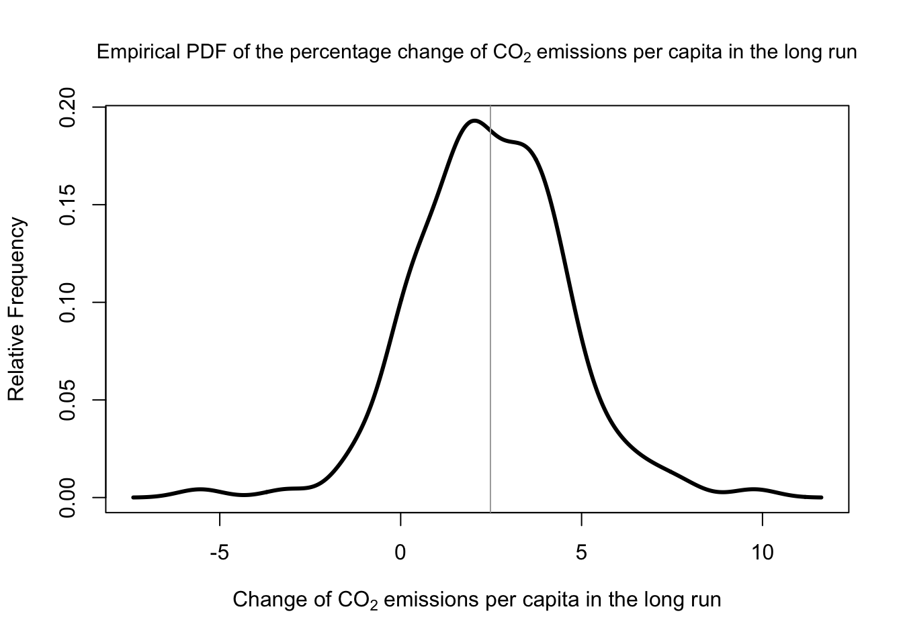
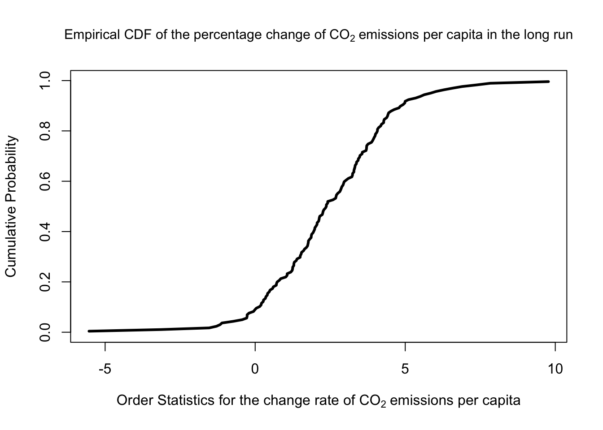
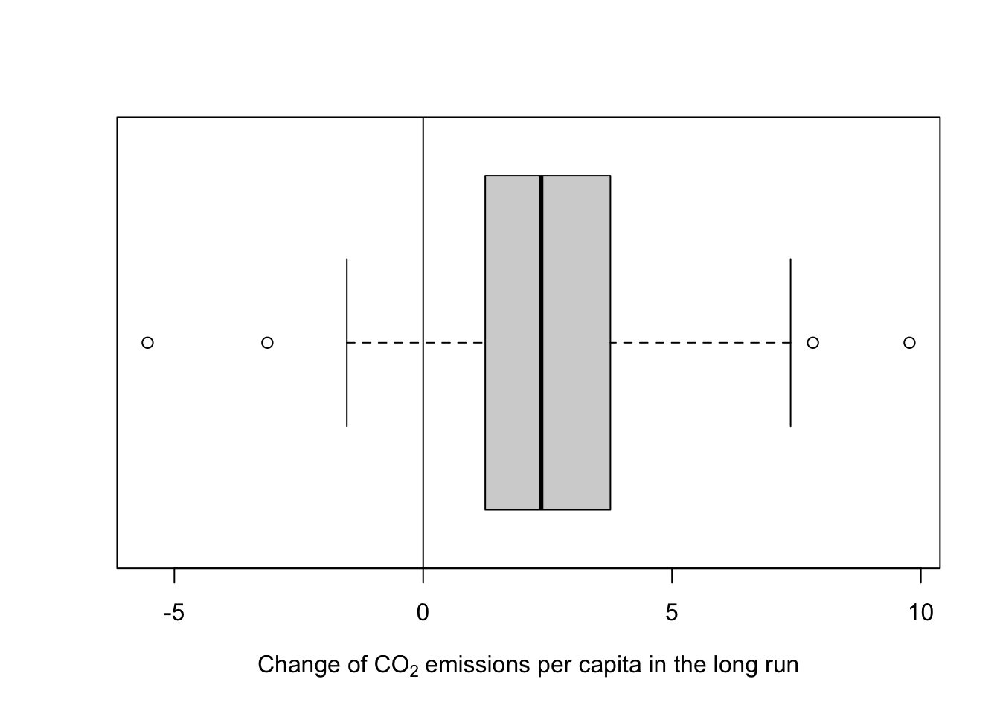

I wanted to see if the change of carbon dioxide emissions per capita, measured in metric tons, is significant in the long run. We expect it to be positive and distinguishable from zero. The dataset is here
First, we might calculate the change rate of the emissions for each country over the period 1960-2016.
#load the libraries we need.
library(readxl)
library(dplyr)
library(data.table)
library(EnvStats)
library(DT)
#import the dataset. I renamed the file as you can see.
emission<-read_xls("carbondioxideemmision.xls")
#now let's see the first small part of the data
emission[1:7,1:7] #alternatively, you can use head() function to review the first parts of the data.# A tibble: 7 × 7
`Data Source` `World Development Indicators` ...3 ...4 ...5 ...6 ...7
<chr> <chr> <chr> <chr> <chr> <chr> <chr>
1 Last Updated Date 44274 <NA> <NA> <NA> <NA> <NA>
2 <NA> <NA> <NA> <NA> <NA> <NA> <NA>
3 Country Name Country Code Indi… Indi… 1960 1961 1962
4 Aruba ABW CO2 … EN.A… 204.… 208.… 226.…
5 Afghanistan AFG CO2 … EN.A… 0.04… 0.05… 0.07…
6 Angola AGO CO2 … EN.A… 0.10… 0.08… 0.21…
7 Albania ALB CO2 … EN.A… 1.25… 1.37… 1.43…#remove the first two rows, since they contain nothing.
emission<-emission[-c(1:2),]
#the first row contains the names of columns, yet the columns are not named properly. Change the columns names to be as the first row
colnames(emission)<-emission[1,]
#after we renamed the columns by the first row, we don't need the first row anymore, so let's delete it.
emission<-emission[-c(1),]
#Now let's see again:
emission[1:5,]# A tibble: 5 × 65
`Country Name` `Country Code` `Indicator Name` `Indicator Code` `1960` `1961`
<chr> <chr> <chr> <chr> <chr> <chr>
1 Aruba ABW CO2 emissions (m… EN.ATM.CO2E.PC 204.6… 208.8…
2 Afghanistan AFG CO2 emissions (m… EN.ATM.CO2E.PC 0.046… 0.053…
3 Angola AGO CO2 emissions (m… EN.ATM.CO2E.PC 0.100… 0.082…
4 Albania ALB CO2 emissions (m… EN.ATM.CO2E.PC 1.258… 1.374…
5 Andorra AND CO2 emissions (m… EN.ATM.CO2E.PC <NA> <NA>
# … with 59 more variables: `1962` <chr>, `1963` <chr>, `1964` <chr>,
# `1965` <chr>, `1966` <chr>, `1967` <chr>, `1968` <chr>, `1969` <chr>,
# `1970` <chr>, `1971` <chr>, `1972` <chr>, `1973` <chr>, `1974` <chr>,
# `1975` <chr>, `1976` <chr>, `1977` <chr>, `1978` <chr>, `1979` <chr>,
# `1980` <chr>, `1981` <chr>, `1982` <chr>, `1983` <chr>, `1984` <chr>,
# `1985` <chr>, `1986` <chr>, `1987` <chr>, `1988` <chr>, `1989` <chr>,
# `1990` <chr>, `1991` <chr>, `1992` <chr>, `1993` <chr>, `1994` <chr>, …#since we have "years" as variables (columns), we can transpose the data so that countries will be variables and years as rows. I'll tell you later why we did that.
emission<-as.data.frame(t(emission))
#again column names are not properly named, so we change them as before.
colnames(emission)<-emission[1,]
#the first four rows are no use for us, we can remove them. The first row contains country names, which we had already used to name our columns, the remaining rows contain country code, indicator name, and indicator code, respectively, and we'll not use any of them.
emission<-emission[-c(1:4),]
#now let's have a look
emission[1:7,1:7] Aruba Afghanistan Angola
1960 204.62037224917452 0.046056712629903414 0.1008353356494021
1961 208.82281106822035 0.053588835050455808 0.082203796747050334
1962 226.11807914628724 0.073720830832381873 0.21053147709234077
1963 214.80037040303375 0.074160724829865854 0.20273730345395635
1964 207.61577710758871 0.086173614368552767 0.21356034931902876
1965 185.20395746164576 0.10128491249779034 0.20589092585307864
1966 172.11995148574894 0.10739888092545179 0.26894143686775823
Albania Andorra Arab World United Arab Emirates
1960 1.2581949278965689 <NA> 0.60744755675365358 0.11903525287281698
1961 1.3741860465116278 <NA> 0.66063794460729808 0.10914123576332393
1962 1.4399559637916719 <NA> 0.72494431853622876 0.16353306337965359
1963 1.1816811441597486 <NA> 0.85056679990052364 0.17583313354111724
1964 1.1117419596667282 <NA> 0.96947620360177611 0.13282478140235732
1965 1.1660990427345477 <NA> 1.1352713004209469 0.14681996836984593
1966 1.3330554645866206 <NA> 1.2482565638723149 0.16045531829774465#now before playing with these numbers let's see if R recognize them as numbers. Let's take the first country as an example.
class(emission$Aruba)[1] "character"#R doesn't recognize the values as numbers. So we can use lapply function to declare all of them as numbers to R. Now here comes why we transposed the data before. The idea is to not have a country column, so I'd declare all columns as numbers to R without being concerned about a character column (the country column)
emission[]<-lapply(emission,function(x) as.numeric(as.character(x)))
#then let's remove the countries that we don't have any observation about it.
emission<-emission[, colSums(is.na(emission))<nrow(emission)]
#the "year" is not recognized as a column by R yet. Let's declare it.
setDT(emission,keep.rownames = "year")
#let's have a quick look
emission[1:5,1:5] year Aruba Afghanistan Angola Albania
1: 1960 204.6204 0.04605671 0.1008353 1.258195
2: 1961 208.8228 0.05358884 0.0822038 1.374186
3: 1962 226.1181 0.07372083 0.2105315 1.439956
4: 1963 214.8004 0.07416072 0.2027373 1.181681
5: 1964 207.6158 0.08617361 0.2135603 1.111742#let's transform our data to long format so that we'd have the countries as a column altogether, resulting in a panel data.
emission<-melt(emission, id.vars="year",variable.name = "country")
head(emission) year country value
1: 1960 Aruba 204.6204
2: 1961 Aruba 208.8228
3: 1962 Aruba 226.1181
4: 1963 Aruba 214.8004
5: 1964 Aruba 207.6158
6: 1965 Aruba 185.2040#filter our data so that we would have only the observations for 1960 and 2016.
emission_6016<-dplyr::filter(emission,year %in% c(1960,2016))
#let's calculate the change rate.
emission_6016<- emission_6016 %>%
group_by(country) %>%
mutate(change=(((value/lag(value))^(1/(2016-1960)))-1)*100)
#let's have a look.
head(emission_6016)# A tibble: 6 × 4
# Groups: country [3]
year country value change
<chr> <fct> <dbl> <dbl>
1 1960 Aruba 205. NA
2 2016 Aruba 8.43 -5.54
3 1960 Afghanistan 0.0461 NA
4 2016 Afghanistan 0.245 3.03
5 1960 Angola 0.101 NA
6 2016 Angola 1.20 4.53#we only need the "country" and its change rate, so we can remove the other two columns.
emission_6016<-emission_6016[,-c(1,3)]
#remove the missing values, since it's only one value for each country.
emission_6016<-na.omit(emission_6016)
#let's have another look.
head(emission_6016)# A tibble: 6 × 2
# Groups: country [6]
country change
<fct> <dbl>
1 Aruba -5.54
2 Afghanistan 3.03
3 Angola 4.53
4 Albania 0.404
5 Arab World 3.73
6 United Arab Emirates 9.77 In addition, let’s consider the average emissions per capita for each country over the same period, and the coefficient of variation as well.
#turning back to our original data, calculate the mean and the coefficient of variation by country and then merge it with the subset with the change rate that we created it before.
emission<-inner_join(emission_6016,emission %>%
group_by(country) %>%
summarise(mean=mean(value,na.rm = T), cv=cv(value,na.rm=T)))Joining, by = "country"#round our variables to the fourth digit
emission$change<-round(emission$change,4)
emission$mean<-round(emission$mean,4)
emission$cv<-round(emission$cv,4)
head(emission)# A tibble: 6 × 4
# Groups: country [6]
country change mean cv
<fct> <dbl> <dbl> <dbl>
1 Aruba -5.54 105. 0.996
2 Afghanistan 3.03 0.148 0.603
3 Angola 4.53 0.652 0.558
4 Albania 0.404 1.65 0.393
5 Arab World 3.73 3.03 0.396
6 United Arab Emirates 9.77 31.0 0.681#since the world bank includes regions among countries, I created a vector manually to contain all regions that are not individual countries, since including them might bias our calculations.
regions<-c("Arab World","Central Europe and the Baltics","Caribbean small states","East Asia & Pacific (excluding high income)","Early-demographic dividend","East Asia & Pacific","Europe & Central Asia (excluding high income)","Europe & Central Asia","European Union","Fragile and conflict affected situations","High income","Heavily indebted poor countries (HIPC)","IBRD only", "IDA & IBRD total","IDA total","IDA blend","IDA only","Latin America & Caribbean (excluding high income)","Latin America & Caribbean","Least developed countries: UN classification","Low income","Lower middle income","Low & middle income","Late-demographic dividend","Middle East & North Africa","Middle income","Middle East & North Africa (excluding high income)","North America","OECD members","Pre-demographic dividend","Pacific island small states","Other small states","Post-demographic dividend","South Asia","Sub-Saharan Africa (excluding high income)","Sub-Saharan Africa","Small states","East Asia & Pacific (IDA & IBRD countries)","Europe & Central Asia (IDA & IBRD countries)","Latin America & the Caribbean (IDA & IBRD countries)","Middle East & North Africa (IDA & IBRD countries)","South Asia (IDA & IBRD)","Sub-Saharan Africa (IDA & IBRD countries)","Upper middle income","World")
#quickly create a new subset to include these regions only, and then filter our data to include only the places that are not in the subset created. there are many ways to do that, I just chose what came to my mind.
emission2<-filter(emission,country%in%regions)
emission<-emission[!(emission$country %in% emission2$country),]
#let's create a table to show our data.
datatable(emission, colnames = c("country","percentage change of emissions per capita \n (1960-2016)","Average of emissions per capita (in metric tons) \n (1960-2016)","coefficent of variation"))We can see which country has the highest and the lowest emission change in the long run.
> #country with the minimum emission change
> emission[which.min(emission$change),]# A tibble: 1 × 4
# Groups: country [1]
country change mean cv
<fct> <dbl> <dbl> <dbl>
1 Aruba -5.54 105. 0.996> #country with the maximum emission change
> emission[which.max(emission$change),]# A tibble: 1 × 4
# Groups: country [1]
country change mean cv
<fct> <dbl> <dbl> <dbl>
1 United Arab Emirates 9.77 31.0 0.681#plot the empirical probability density function.
epdfPlot(emission$change,xlab=expression('Change of CO'[2] ~ 'emissions per capita in the long run'),main=expression('Empirical PDF of the percentage change of CO'[2]~ 'emissions per capita in the long run'),cex.main=0.95)
abline(v=mean(emission$change),col="darkgray")
The dark gray vertical line represents the mean in our data, as you might expected from the code.
#plot of the empirical cumulative distribution function.
ecdfPlot(emission$change, xlab =expression('Order Statistics for the change rate of CO'[2]~'emissions per capita'),main=expression('Empirical CDF of the percentage change of CO'[2]~ 'emissions per capita in the long run'),cex.main=0.95)
We can see that the probability that the emission change rate in the long run is less than or equal to zero is almost \(0\), supporting our hypothesis that the change rate is positive.Simply, let \(X\) be the change of CO2 emissions per capita, then \(P(X \le 0) \approx 0\), but we didn’t check yet for its significance from zero, which comes later.
Now, let’s “boxplot” it!
boxplot(emission$change,horizontal=T,xlab=expression('Change of CO'[2] ~ 'emissions per capita in the long run'),varwidth=T)
abline(v=0)
It doesn’t seem close to zero but it might not be significant, so let’s test if the change in the long run across countries is significant from zero.
#using t-test.
t.test(emission$change)
One Sample t-test
data: emission$change
t = 14.803, df = 152, p-value < 2.2e-16
alternative hypothesis: true mean is not equal to 0
95 percent confidence interval:
2.149774 2.811979
sample estimates:
mean of x
2.480876 In other words, the carbon dioxide emissions per capita, in metric tons, across countries over the period \(1960-2016\) increased significantly by more than \(2\%\), on average.
We can play more with our data, but I’ll leave that to you, which is why I inserted the interactive table.
Have fun!